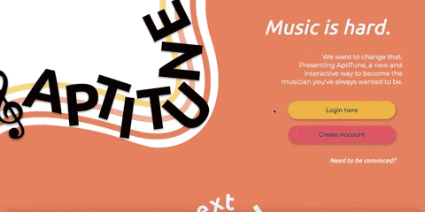
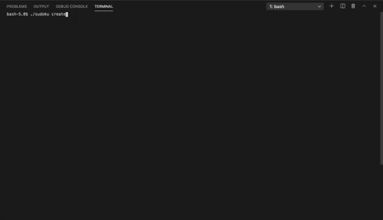

Hi! I'm Kathy!
I'm a Dartmouth '22, studying Computer Science modified with Engineering Sciences.
I was born in Cambridge, England, and after 20 years of constant moving, I now live in Frisco, TX.
click the links on the right to find out more about me!
life timeline
get to know my life story a little bit!
(1) Cambridge, England
I was born here and lived here until I was 18 months.

(2) Stuttgart, Germany
I lived here for around two years, or until I was 3 years old.

(3) Hanover, NH
My dad researched at Dartmouth, and I went to daycare here!
(4) Little Rock, AR
From 6 to 13 years old, I went to elementary and middle school here.
(5) Memphis, TN
I spent all 4 years of high school here!
(6) Frisco, TX
My famliy now lives in Texas!
dance
I love dancing and am super passionate about music and the arts!
Dance!
I trained in ballet and contemporary for seven years before quitting in seventh grade to focus on other extracurriculars.
Six years later, I found a new dance family here at Dartmouth!
study abroad
Take a peek at my 19F adventures in China!
China!
My study abroad in China by far the best experience I've had! Below are some of my favorite memories.

Qualifications
Software development
- C
Web Development
Data Visualization
- Matlab
Development
Since I began learning how to code, programming has blessed me in so many ways.
It has brought so many friendships into my life and allowed me to develop life skills that extend beyond the scope of academia.
I've been able to create things that I'm proud of and see their impacts materialize even in the smallest ways.
Why DALI?
friendships
I am so excited to connect with more people and make lasting friendships through a mutual passion.
programming & impacts
DALI allows me consistency in improving and applying my programming skills, as well as doing my part to positively impact the world.
self-improvement
Working with others will push me expand my problem-solving skills and improve my communication skills.
collaborative projects
AptiTune
AptiTune is an interactive, sheet-music learning experience, built using the react.js framework. It is currently in the works of becoming a startup, as our team of six continues the development process.
 Check it out here!Sudoku
This program was developed as a cs50 final project, the most memorable of this experience being our incredible teamwork and efficient algorithms.
*code is unable to be accessed due to privacy status of the class repo.